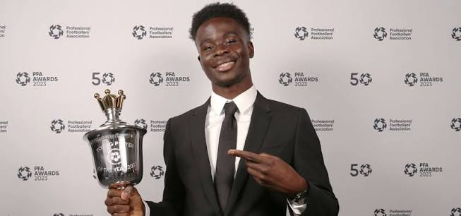

Bukayo Saka

Reconnaissance
- Il a été élu meilleur jeune joueur du championnat anglais (PFA Young Player of the Year) pour la saison 2022-2023.
- Il a reçu le titre honorifique de meilleur joueur de la saison d'Arsenal à plusieurs reprises grâce aux votes des supporters.
- Il a été sacré deux fois consécutives meilleur joueur masculin de la sélection nationale d'Angleterre en 2022 et 2023.
- Il a reçu la prestigieuse distinction internationale du Prix Socrates lors de la cérémonie du Ballon d'Or 2026 pour ses engagements humanitaires.
- Accueil
- Enfance
- Carrière
- Travail humanitaire
- Reconnaisance